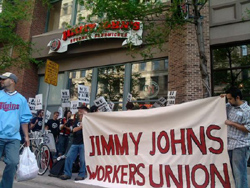

Submitted on Tue, 03/08/2011 - 9:59am
By Autumn Gonzalez, Nicholas DeFilippis and Donal Fallon
This story originally appeared in the Industrial Worker - Issue #1733, March 2011.
The Industrial Workers of the World has always distinguished itself in its resolutionto be the One Big Union for all workers.
Submitted on Mon, 02/28/2011 - 9:57pm
Headlines:
- Egypt: Labor Unrest Was ‘Straw That Broke The Camel’s Back'
- Starbucks Workers Declare New Union Shop in NYC
- Rage Against the Machine Supports Guitar Workers’ Strike
Features:
- Obituary: Remembering Labor Activist Jayabean Desai
- Celebrating A Tradition of Women in the IWW
- 100 Years Later: Remembering the Triangle Shirtwaist Factory Fire
Download a free PDF copy of this issue.
Submitted on Sun, 01/23/2011 - 3:02pm
 On Monday, January 17, 2011, Martin Luther King Jr. Day, while baristas at the Astor Place Starbucks in Manhattan were declaring their membership in the IWW, members of the IWW and supporters descended on Starbucks throughout the United States to wish baristas a happy Martin Luther King day. As part of these greetings, IWW organizers informed baristas of the recent victory won by IWW Starbucks baristas in securing time-and-one-half holiday premium for working on Martin Luther King, Jr. Day.
On Monday, January 17, 2011, Martin Luther King Jr. Day, while baristas at the Astor Place Starbucks in Manhattan were declaring their membership in the IWW, members of the IWW and supporters descended on Starbucks throughout the United States to wish baristas a happy Martin Luther King day. As part of these greetings, IWW organizers informed baristas of the recent victory won by IWW Starbucks baristas in securing time-and-one-half holiday premium for working on Martin Luther King, Jr. Day.
The victory came after a spirited three-year initiative of the IWW Starbucks Workers Union (SWU) which made public the company's second-class treatment of Dr. King's birthday and called on the coffee giant to pay the same premium that it pays workers on six other federal holidays. After Starbucks refused to change its policy, union workers and their supporters launched a determined campaign of grassroots actions in Starbucks stores and communities all across the country in support of equal treatment for MLK Day. (For more information, see related article: Starbucks Baristas Win Equal Treatment for MLK Day After Three Year Union Fight.
IWW members visited Starbucks and talked with baristas in hundreds of cities throughout the US.
All in all, the effort was a huge success. Workers were positive and appreciative, and it shows that solidarity unionism and international solidarity is still a very effective strategy.
The Industrial Workers of the World union effort at Starbucks is the first time a labor organization in the United States has succeeded in building a base of organized baristas at the company. With over 300 worker-organizers across the country and growing, the SWU has consistently chalked up victories at Starbucks including across-the-board raises, more secure work hours, and respectful treatment from previously abusive managers whose conduct improved due to union pressure campaigns. The SWU has repeatedly prevailed against Starbucks in the legal arena across multiple cities including in a lengthy New York City trial over pervasive illegal union-busting, the first time the company had to square off against baristas in open court regarding unfair labor practices.
The IWW Starbucks campaign is just beginning. If you are a barista at Starbucks, or if you are a worker at any unorganized workplace, including especially a major chain or fastfood franchise, we want to hear from you. Contact us by visiting any of the links listed at the end of this article.
Submitted on Tue, 01/11/2011 - 1:59am
FOR IMMEDIATE RELEASE - Jimmy John's Workers Union; Industrial Workers of the World
Contacts:
- Micah Buckley-Farlee, 612-845-9290
- Erik Forman, 612-598-6205
Sandwich Workers Begin New Push for “10 Point Program” to Reform Fast Food Industry
Attached:
MINNEAPOLIS– The National Labor Relations Board approved a settlement today nullifying the results of the historic October 22 union election at Jimmy John's, putting victory back on the table for the nation's first-ever union in franchised fast food. The settlement validates workers' claims that franchise owners Mike and Rob Mulligan were able to squeak out an 87-85 victory in the election only by resorting to unlawful tactics including threatening a wage freeze, intentionally fabricating rumors that the union engaged in sabotage, retaliating against union supporters, and numerous other labor rights violations.
With the tainted election results nullified, the union is asking the franchise owners to negotiate over its "10 Point Program for Justice at Jimmy John's," a comprehensive package of reforms that will bring respect, dignity, and democracy to the fast food workplace.
“There can now be no doubt that our rights were severely violated, but we're willing to put the past behind us. We are calling on Mike and Rob Mulligan to make a fresh start and work with us, rather than against us, to improve the lives of Jimmy John's workers and their families by negotiating over our 10 Point Program for modest but urgently needed changes,” said Micah Buckley-Farlee, a delivery driver at Jimmy John's and active member of the union campaign.
Submitted on Tue, 01/04/2011 - 8:37pm
In the midst of organizing in a southwest Oklahoma casino, we were hit hard with the sudden death of a fellow worker to lung cancer. Colin "Corky" Brous. Corky was beloved friend, father and fellow worker. He was for the union 100% and helped put a lot of good ideas on the table. Corky defended fellow workers and stood tall in the face of management. His presence, dedication and ideas to bring solidarity to our shop floor will remain in our hearts and minds forever.